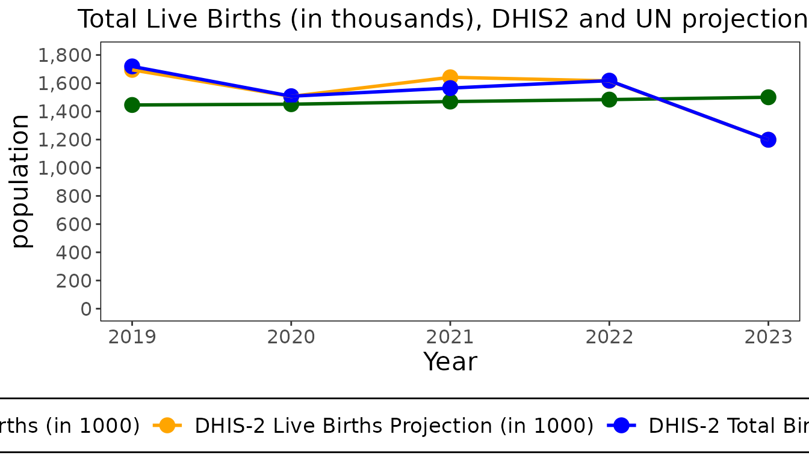
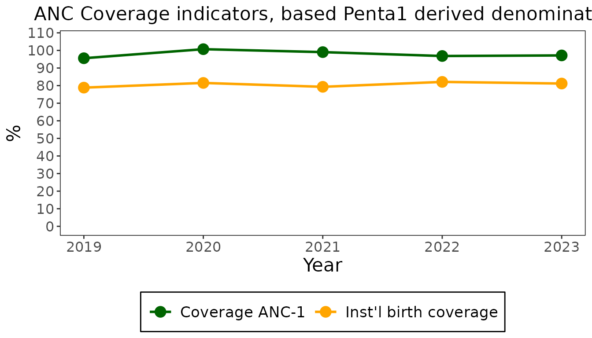
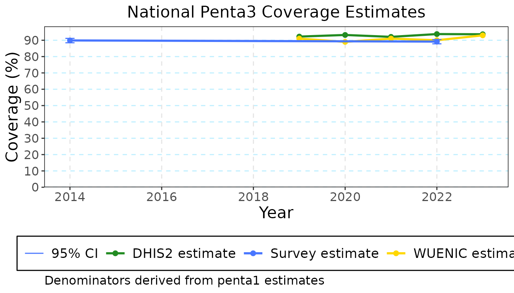
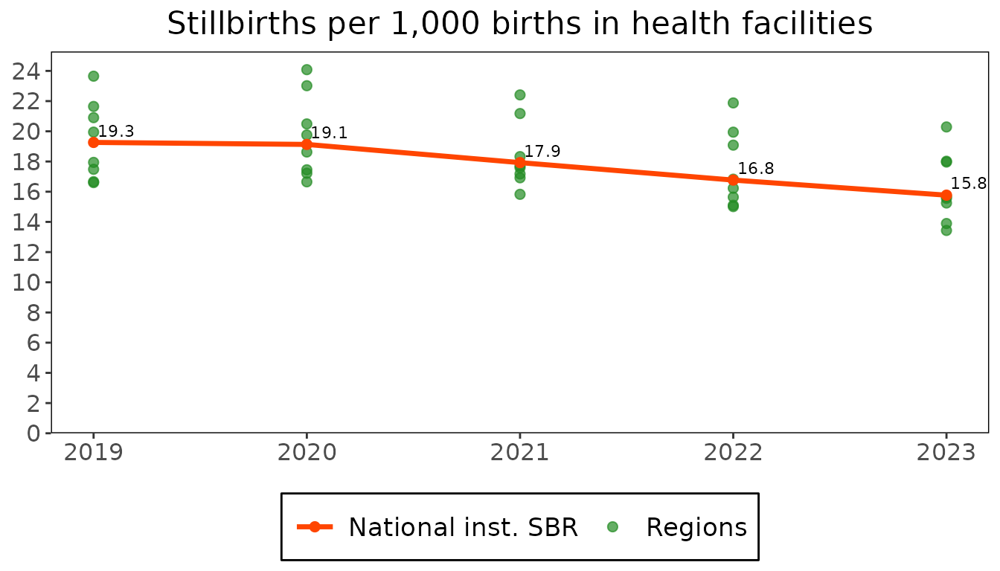

Coverage is a count of services divided by the population that should
have received them. Both sides need work: the counts are adjusted for
what was not reported, and the population (the denominator) can be
estimated in several ways. This guide follows the steps with the dataset
object, the CacheConnection, which remembers each choice
and computes the results from them.
library(cd2030.core)
cache <- load_cache_data(system.file("extdata", "kenya.xlsx", package = "cd2030.core"))
#> ℹ Loading Excel "kenya.xlsx" for parts
#> ! The following columns are empty: anc_1trimester, under5_deaths, total_deaths, ipv2, measles_cases
#> ℹ Successfully loaded and cleaned data
#> ℹ Auto-detect candidates (|group|): vaccine=19, rmncah=28 -> selected rmncah1. Adjust the counts
Adjustment does three things to the monthly counts:
-
Scales them up for incomplete reporting. With a
reporting rate of r percent, a count becomes
count * (1 + (100 / r - 1) * k). The factor k, between 0 and 1, says how much service the facilities that did not report are assumed to have given, compared with those that did: 0 means none, 1 means as much. - Replaces extreme outliers (a month more than five median absolute deviations from the district’s median) with the district’s median for the year.
- Fills missing values with the district’s median for the year.
There is one k for each group of indicators.
cache$set_k_factors(c(anc = 0.25, idelv = 0.25, vacc = 0.25, opd = 0.25, ipd = 0.25))
cache$adjust_data()The adjusted data is kept beside the original, and
adjustment_values shows what the adjustment changed, year
by year.
changes <- cache$adjustment_values
changes[, c("year", "penta1_raw", "penta1_adj", "anc1_raw", "anc1_adj")]
#> # Table 1: Unadjusted and adjusted values
#> # A tibble: 5 × 5
#> year penta1_raw penta1_adj anc1_raw anc1_adj
#> <int> <dbl> <dbl> <dbl> <dbl>
#> 1 2019 1359967 1380255. 1429512 1451735.
#> 2 2020 1323091 1345884. 1465266 1491785.
#> 3 2021 1411557 1424787. 1547683. 1553043.
#> 4 2022 1387864 1398699. 1479978. 1490510.
#> 5 2023 1410586 1412664. 1500341 1510589.A year can be left out altogether with
cache$set_excluded_years(). Without the dataset object, the
same adjustment is
adjust_service_data(data, adjustment = "custom", k_factors = ...).
2. Compare the denominators
The populations come from two sources: the projections in the
facility data’s population sheet (called dhis2) and the UN
estimates (un).
populations <- cache$denominator_metrics
populations[, c("year", "un_births", "totlivebirths_dhis2", "un_under1", "totunder1_dhis2")]
#> # Table 2a: Total Population and Live Birth by Source
#> # Country: Kenya
#> # A tibble: 5 × 5
#> year un_births totlivebirths_dhis2 un_under1 totunder1_dhis2
#> <dbl> <dbl> <dbl> <dbl> <dbl>
#> 1 2019 1445. 1694. 1407. 1602.
#> 2 2020 1451. 1506. 1407. 1459.
#> 3 2021 1469. 1642. 1419. 1509.
#> 4 2022 1483. 1616. 1436. 1563.
#> 5 2023 1500. 1199. 1453. 1602.
plot(populations, metric = "births")
Two more denominators are derived from the service counts themselves. Where nearly every pregnant woman attends a first antenatal visit, or nearly every infant receives a first dose of pentavalent vaccine, the count divided by the survey coverage of that service estimates the population.
cd_denominator_labels()
#> un dhis2 anc1
#> "UN projections" "DHIS2 projections" "ANC1-derived"
#> penta1 anc1derived penta1derived
#> "Penta1-derived" "ANC1 population growth" "Penta1 population growth"3. Give the national rates
The derived denominators step from one population to the next (pregnancies to births to surviving infants) with a few national rates. The package fills in those the country’s latest survey has.
str(cache$national_estimates)
#> List of 7
#> $ nmr : num 0.023
#> $ pnmr : num 0.0121
#> $ twin_rate: num 0.015
#> $ preg_loss: num 0.03
#> $ sbr : logi NA
#> $ anc1 : num 0.98
#> $ penta1 : num 0.971Every rate is needed. This survey has no stillbirth rate, so it is set here; the others can be replaced the same way.
cache$set_national_estimates(list(sbr = 0.02))
cache$check_inequality_params
#> [1] TRUEcheck_inequality_params and
check_coverage_params say whether the dataset has what the
coverage calculations need. When one is FALSE, something is
missing: adjusted data, a survey year, a national rate, or the UN,
WUENIC or survey estimates.
4. Compute coverage
indicator_coverage_national has the populations and
coverage of every indicator under every denominator. Columns are named
cov_<indicator>_<denominator>.
coverage <- cache$indicator_coverage_national
coverage[, c("year", "cov_penta3_dhis2", "cov_penta3_un", "cov_penta3_anc1", "cov_penta3_penta1")]
#> # Table: National Coverage Estimates
#> # A tibble: 5 × 5
#> year cov_penta3_dhis2 cov_penta3_un cov_penta3_anc1 cov_penta3_penta1
#> <dbl> <dbl> <dbl> <dbl> <dbl>
#> 1 2019 79.2 92.9 94.6 92.2
#> 2 2020 87.8 91.2 90.7 93.2
#> 3 2021 84.2 94.1 91.1 92.1
#> 4 2022 85.6 93.2 94.9 93.8
#> 5 2023 116. 93.0 94.5 93.7
plot(coverage, plot_type = "anc_coverage_penta1")
The denominators do not agree, which is why they are compared. A coverage above 100, as the facility projections give for 2023, means that denominator is too small for the services counted.
The same tables exist by region and by district:
indicator_coverage_admin1,
indicator_coverage_district.
5. Choose a denominator
The denominator to use is the one whose coverage agrees best with the
surveys. denominator is the one chosen for the dataset, and
maternal_denominator the one for maternal indicators.
cache$denominator
#> [1] "penta1"
cache$set_denominator("penta1")6. Compare with surveys and WUENIC
get_filtered_coverage() takes one indicator, with the
chosen denominator, and sets the facility-data estimate beside the
survey estimates, their confidence interval, and the WUENIC
estimates.
penta3 <- cache$get_filtered_coverage("penta3", "national")
penta3
#> # A tibble: 5 × 7
#> estimates `2014` `2019` `2020` `2021` `2022` `2023`
#> <chr> <dbl> <dbl> <dbl> <dbl> <dbl> <dbl>
#> 1 DHIS2 estimate NA 92.2 93.2 92.1 93.8 93.7
#> 2 Survey estimates 89.9 NA NA NA 89.2 NA
#> 3 95% CI LL 88.5 NA NA NA 87.8 NA
#> 4 95% CI UL 91.1 NA NA NA 90.4 NA
#> 5 WUENIC estimates NA 91 89 91 90 93
plot(penta3)
Beyond coverage
The dataset object computes the other analyses the same way. Each is
described in ?CacheConnection and under its heading in the
reference.
mortality <- cache$mortality_summary
plot(mortality, indicator = "sbr_inst")
| Analysis | From the dataset object |
|---|---|
| Sub-national inequality |
get_filtered_inequality(),
inequality_admin1, inequality_district
|
| Institutional mortality |
mortality_summary, mortality_ratios
|
| Service utilization |
service_utilization_national,
service_utilization_admin1
|
| Health system |
health_system_metrics_national,
health_system_comparison
|
| Family planning | fpet_data |
Write a report
report_presets() are Countdown’s standard reports.
export_report() writes one for a dataset, as Word, PDF or a
PowerPoint deck.
names(report_presets("en"))
#> [1] "data_quality" "adjustment" "denominator_selection" "national_coverage"
#> [5] "national_inequality" "mortality" "service_utilization" "health_system"
#> [9] "private_sector" "synthesis" "one_pager"
reports <- report_presets("en")
export_report(cache, reports[["national_coverage"]], "national-coverage.docx", format = "docx")